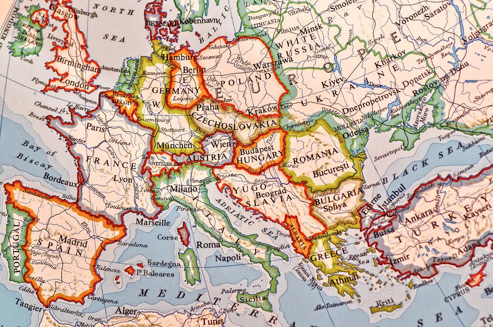

¿Qué es la economia?
La economia es la ciencia social que estudia la mejor manera de usar
y administrar recursos limitados para garantizar la mayor satisfaccion posible de las
necesidades humanas y de la sociedad. Siendo que su principal objetivo es el anterior
mencionado esta tambien se encarga de mejorar las condiciones de vida de las personas y
de las sociedades en las que viven.
La cracion de la economia no tiene un año fijo, debido a que esta ciencia es tan antigua
como las sociedades humanas, pues en estas se buscaba la mejor manera de administrar sus
recursos y los cambios de de bienes y servicios
Esta tiene ramas que se encargan de estudiar un ambito especifico
Microeconomia
La microeconomia es una de esas ramas de la economia que se mencionaron
anteriormente, esta rama estudia principalmente la conducta de los agentes que componen la sociedad
todo esto desde el ambito economico. Este estudio se realiza a las familias, empresas y a la sociedad
y como la relacion entre estos y sus conductas afectan los precios y/o las cantidades de los bienes
y servicios disponibles.
Los factores más importantes son:
- Familia
- Empresas
- Negocios
- Mercado de factores
- Mercado de productos

Macroeconomia
La macroeconomia es otra de las ramas de la economia, esta
se enfoca principalmente en los agregados economicos, que son los datos que
tiene cada pais en el ambito economico, como lo son los niveles de empleo,
producción y precios, tambien abarca grandes e importantes mercados internacionales
junto con sus agregados de trabajo y capital.
Esta no se enfoca en ambitos pequeños ni en los agentes economicos sino que se centra
en los grandes aspectos y en el ambito general.